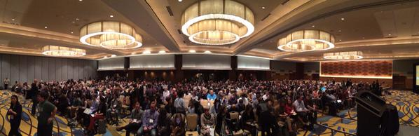
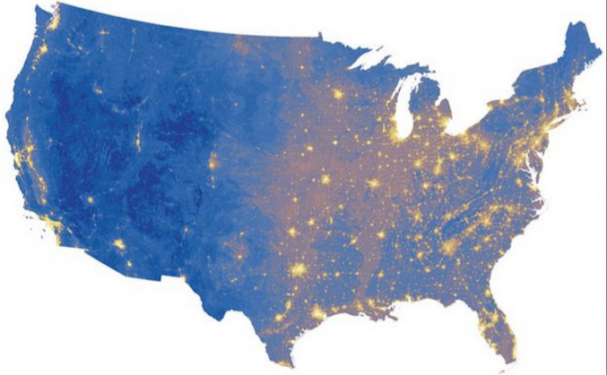

8 Tips for Starting a Career in
Data Journalism -- And Why You Should
(With GIFs!)
Jonah Newman | The Chicago Reporter
Twitter: @jonahshaiWebsite: chicagoreporter.com
Slides: jonahnewman.com/talks
About Me
- Northwestern University
- Chronicle of Higher Education
- Chicago Reporter
Don't do What I did

1. Join IRE. Go to NICAR. Get on the Listserv.

NICAR 2015 in Atlanta
Jobs!

2. Read the best (and worst) in data journalism.
And know the difference


3. FOIA Early & FOIA Often.

Know the FOIA law.
Fight back if you don't get what you ask for.

4. Be skeptical. Remember, data can lie.

Pitfall 1:
Distrust your data

Pitfall 2:
Maps often don't show you what you think they do

Pitfall 3: Correlation is not causation

Pitfall 4: Data require context
5. Don't be intimidated. Learn how to learn.

6. To learn a new skill, find a project.

7. Any story can be a data story.
...And it probably should be.
8. Use it for good, never for evil.

Examples: